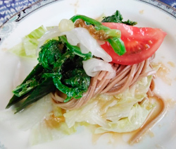

こごみとソバのサラダ
- 調理時間：30 分
- （一人当たり）
- カロリー：261kcal
- たんぱく質：9.9g
- 脂質：6.3g
- 炭水化物：41.6g
- 塩分：2.0g


＜2人分＞
- ソバ（乾麺）
- 100g
- レタス
- 3枚
- こごみ
- 50g
- 玉ねぎ
- 少々
- トマト
- 1/4個
- ・ポン酢
- 100ml
- ・オリーブオイル
- 大さじ1
ドレッシング


- 湯を沸かし、沸騰したら塩とこごみを入れて、1分位茹でた後、冷水で粗熱をとり水気をきる。
- こごみは3～4㎝幅にレタスは一口サイズに切る。トマトはくし切りにする。
新タマネギはくし切りにして、電子レンジ500wで1分～2分かけてやわらかくする。 - ソバは商品に記載された時間の通りに茹でて、ぬめりをとるようにしっかり洗う。
- ポン酢とオリーブオイルを合わせてドレッシングをつくる。
- お皿に盛り付けて、ドレッシングをお好みの量かけて出来上がり。
こごみとソバのサラダ
古くから人々に親しまれてきた蕎麦。穀類ですが、たんぱく質やビタミン、ミネラルなど様々な栄養素が含まれています。
先ず、白米やうどんに比べてたんぱく質が多く、血糖値の上昇が緩やかです。ビタミンB群や食物繊維が含まれることも特徴ですが、注目したいのはルチンです。ルチンはポリフェノールの一種で、抗酸化作用や毛細血管を強く丈夫にする働きがあるので動脈硬化や高血圧を改善する効果があると言われています。
かけそば、もりそば、ぶっかけそば等。いつもの食べ方に飽きてきたら色々なレシピを試してみませんか？